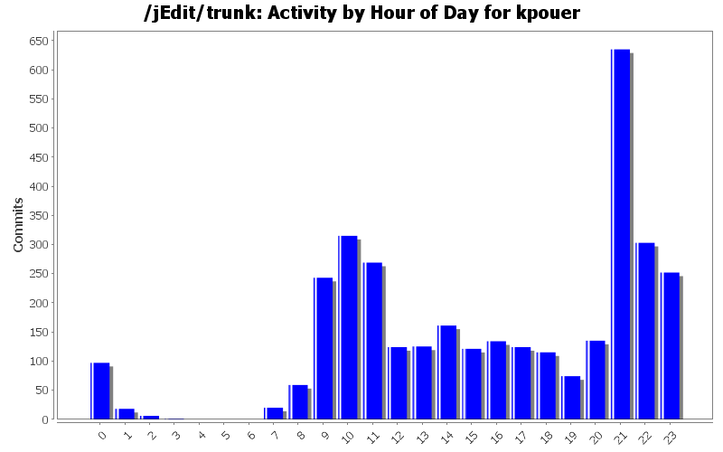
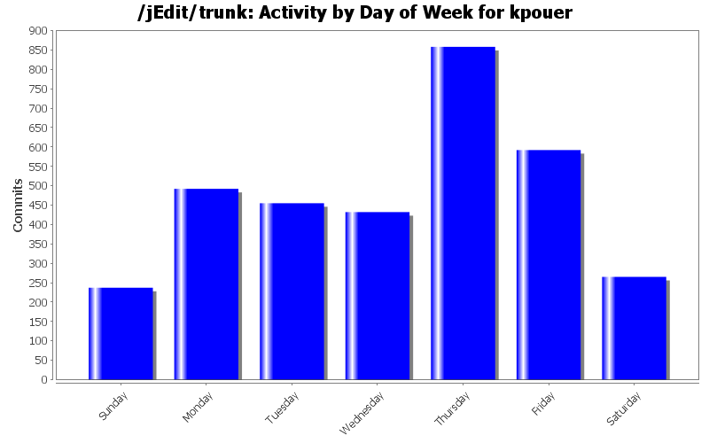
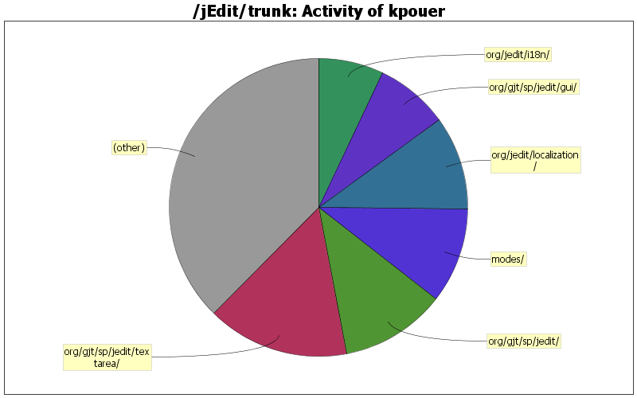

| Directory | Changes | Lines of Code | Lines per Change |
|---|---|---|---|
| Totals | 3331 (100.0%) | 75074 (100.0%) | 22.5 |
| org/gjt/sp/jedit/textarea/ | 273 (8.2%) | 11574 (15.4%) | 42.3 |
| org/gjt/sp/jedit/ | 670 (20.1%) | 8619 (11.5%) | 12.8 |
| modes/ | 133 (4.0%) | 7743 (10.3%) | 58.2 |
| org/jedit/localization/ | 23 (0.7%) | 7636 (10.2%) | 332.0 |
| org/gjt/sp/jedit/gui/ | 193 (5.8%) | 5983 (8.0%) | 31.0 |
| org/jedit/i18n/ | 3 (0.1%) | 5303 (7.1%) | 1767.6 |
| / | 30 (0.9%) | 3277 (4.4%) | 109.2 |
| org/gjt/sp/jedit/gui/statusbar/ | 57 (1.7%) | 2614 (3.5%) | 45.8 |
| org/gjt/sp/jedit/options/ | 135 (4.1%) | 2185 (2.9%) | 16.1 |
| org/gjt/sp/util/ | 80 (2.4%) | 2033 (2.7%) | 25.4 |
| doc/ | 471 (14.1%) | 2002 (2.7%) | 4.2 |
| org/gjt/sp/jedit/bufferset/ | 50 (1.5%) | 1836 (2.4%) | 36.7 |
| org/gjt/sp/jedit/pluginmgr/ | 96 (2.9%) | 1735 (2.3%) | 18.0 |
| org/gjt/sp/jedit/browser/ | 77 (2.3%) | 1560 (2.1%) | 20.2 |
| org/gjt/sp/jedit/bufferio/ | 33 (1.0%) | 1475 (2.0%) | 44.6 |
| org/gjt/sp/jedit/search/ | 94 (2.8%) | 1095 (1.5%) | 11.6 |
| org/gjt/sp/jedit/input/ | 23 (0.7%) | 1061 (1.4%) | 46.1 |
| org/gjt/sp/jedit/io/ | 70 (2.1%) | 1031 (1.4%) | 14.7 |
| org/gjt/sp/jedit/buffer/ | 76 (2.3%) | 760 (1.0%) | 10.0 |
| org/gjt/sp/jedit/syntax/ | 57 (1.7%) | 644 (0.9%) | 11.2 |
| org/gjt/sp/jedit/gui/tray/ | 13 (0.4%) | 638 (0.8%) | 49.0 |
| org/jedit/keymap/ | 15 (0.5%) | 627 (0.8%) | 41.8 |
| keymaps/ | 5 (0.2%) | 601 (0.8%) | 120.2 |
| org/gjt/sp/jedit/datatransfer/ | 18 (0.5%) | 543 (0.7%) | 30.1 |
| org/gjt/sp/jedit/indent/ | 22 (0.7%) | 490 (0.7%) | 22.2 |
| org/gjt/sp/jedit/keymap/ | 16 (0.5%) | 448 (0.6%) | 28.0 |
| macros/Text/ | 2 (0.1%) | 378 (0.5%) | 189.0 |
| org/gjt/sp/jedit/visitors/ | 3 (0.1%) | 157 (0.2%) | 52.3 |
| org/gjt/sp/jedit/menu/ | 23 (0.7%) | 137 (0.2%) | 5.9 |
| org/gjt/sp/jedit/help/ | 11 (0.3%) | 131 (0.2%) | 11.9 |
| macros/Editing/ | 3 (0.1%) | 113 (0.2%) | 37.6 |
| org/gjt/sp/jedit/migration/ | 5 (0.2%) | 103 (0.1%) | 20.6 |
| org/jedit/migration/ | 5 (0.2%) | 99 (0.1%) | 19.8 |
| org/gjt/sp/jedit/msg/ | 11 (0.3%) | 79 (0.1%) | 7.1 |
| macros/Java/ | 3 (0.1%) | 72 (0.1%) | 24.0 |
| macros/Misc/ | 8 (0.2%) | 68 (0.1%) | 8.5 |
| macros/Clipboard/ | 6 (0.2%) | 55 (0.1%) | 9.1 |
| org/jedit/core/ | 2 (0.1%) | 43 (0.1%) | 21.5 |
| macros/Files/ | 2 (0.1%) | 35 (0.0%) | 17.5 |
| package-files/windows/ | 2 (0.1%) | 18 (0.0%) | 9.0 |
| jars/MacOSX/ | 4 (0.1%) | 18 (0.0%) | 4.5 |
| org/gjt/sp/jedit/print/ | 3 (0.1%) | 17 (0.0%) | 5.6 |
| jars/QuickNotepad/ | 4 (0.1%) | 17 (0.0%) | 4.2 |
| doc/users-guide/ | 5 (0.2%) | 12 (0.0%) | 2.4 |
| org/jedit/options/ | 1 (0.0%) | 3 (0.0%) | 3.0 |
| org/gjt/sp/jedit/bsh/ | 183 (5.5%) | 2 (0.0%) | 0.0 |
| installer/ | 1 (0.0%) | 2 (0.0%) | 2.0 |
| doc/tips/ | 2 (0.1%) | 2 (0.0%) | 1.0 |
| org/gjt/sp/jedit/icons/themes/tango/ | 1 (0.0%) | 0 (0.0%) | 0.0 |
| org/gjt/sp/jedit/icons/themes/classic/ | 1 (0.0%) | 0 (0.0%) | 0.0 |
| org/gjt/sp/jedit/bsh/reflect/ | 2 (0.1%) | 0 (0.0%) | 0.0 |
| org/gjt/sp/jedit/bsh/org/objectweb/asm/ | 20 (0.6%) | 0 (0.0%) | 0.0 |
| org/gjt/sp/jedit/bsh/commands/ | 40 (1.2%) | 0 (0.0%) | 0.0 |
| org/gjt/sp/jedit/bsh/collection/ | 4 (0.1%) | 0 (0.0%) | 0.0 |
| org/gjt/sp/jedit/bsh/classpath/ | 10 (0.3%) | 0 (0.0%) | 0.0 |
| jars/MacOS/macos/menu/ | 1 (0.0%) | 0 (0.0%) | 0.0 |
| jars/MacOS/macos/ | 1 (0.0%) | 0 (0.0%) | 0.0 |
| bsh/reflect/ | 1 (0.0%) | 0 (0.0%) | 0.0 |
| bsh/org/objectweb/asm/ | 20 (0.6%) | 0 (0.0%) | 0.0 |
| bsh/commands/ | 63 (1.9%) | 0 (0.0%) | 0.0 |
| bsh/collection/ | 2 (0.1%) | 0 (0.0%) | 0.0 |
| bsh/classpath/ | 10 (0.3%) | 0 (0.0%) | 0.0 |
| bsh/ | 133 (4.0%) | 0 (0.0%) | 0.0 |

New method IntegerArray.isEmpty()
0 lines of code changed in 2 files:
Reset Killring only with String collection
0 lines of code changed in 2 files:
Killring contains only String
0 lines of code changed in 2 files:
Fix a bug preventing jEdit from loading when a buffer has an invalid selection and is loaded in two edit panes
9 lines of code changed in 2 files:
Add Gherkin mode (english) to support Cucumber feature files (Matthieu Casanova)
57 lines of code changed in 3 files:
New mode for swift Patches #587
295 lines of code changed in 3 files:
Fixed build of standalone textArea
42 lines of code changed in 3 files:
added missing annotations and fixed coding style
32 lines of code changed in 1 file:
JEditBuffer.isFoldEnd() was unable to detect the fold end when it was the last line (bug #3917)
5 lines of code changed in 2 files:
Removed uservoice link
1 lines of code changed in 2 files:
use of java 7 syntax
9 lines of code changed in 1 file:
use java7 syntax
7 lines of code changed in 1 file:
Fix a bug preventing from removing an unloaded plugin #3877
11 lines of code changed in 2 files:
The native splashscreen is removed as it was not possible to disable it #3876
3 lines of code changed in 2 files:
buffer.getFoldHandler() is never null
2 lines of code changed in 1 file:
Speedup of LogViewer:
if there is no filter, do not lowercase the log text
Keep logs color and refresh them only on properties change
42 lines of code changed in 2 files:
removed unused import, added missing @Override annotations
4 lines of code changed in 1 file:
use of Objects.equals()
17 lines of code changed in 6 files:
fixed coding style
7 lines of code changed in 1 file:
Fixed Whole word search (#3614975, patch #3615185)
7 lines of code changed in 3 files:
(1302 more)